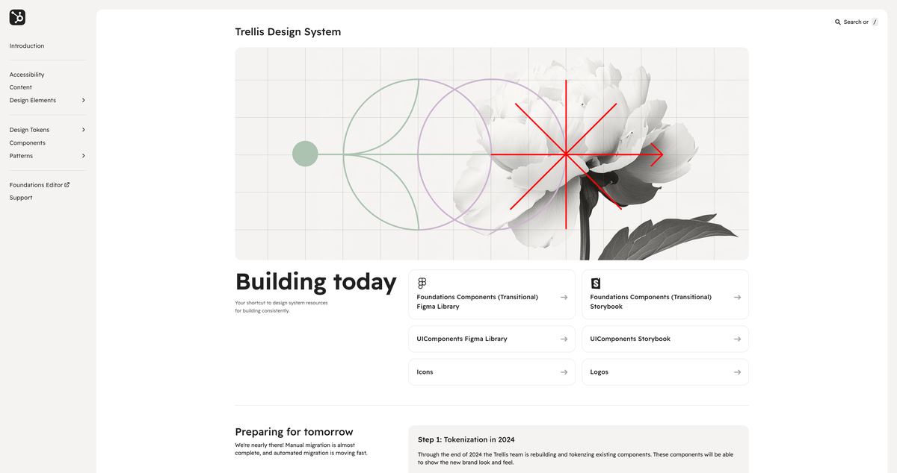
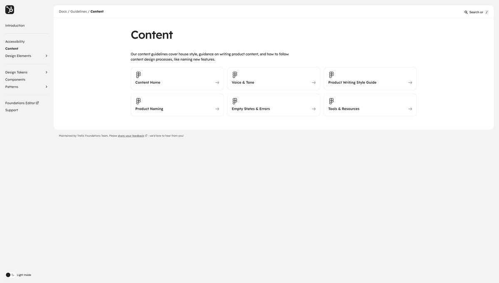

Designers didn't know which source to trust.
When I joined the Trellis team at short notice, HubSpot's design guidance was distributed across two different systems — CANVAS and Storybook. Neither was complete. Designers were unclear which source was authoritative, and the inconsistency was creating downstream problems: teams making decisions based on outdated guidance, and new joiners getting contradictory information depending on where they looked.
The Trellis team was launching a new documentation website and needed the content to be ready for it.
Auditing and rewriting under tight deadlines.
I audited the existing design systems content across both sources, identified gaps and conflicts, and rewrote the content to support the new Trellis docs site launch. Facing tight deadlines and significant ambiguity, I iterated on my working process with other content designers to improve our joint processes and outputs.
This wasn't just editing — it involved making decisions about what should and shouldn't be documented, how to structure guidance for different audiences, and how to write content that would scale as the Design Systems team's strategy evolved.
The new site covered accessibility, voice and tone, design elements, patterns, components, and content guidelines — all in a single, navigable reference.


A single source of truth, and a Craft with Care award.
The Trellis docs site launched successfully as the single authoritative reference for design documentation at HubSpot. Since launch: homepage has seen 5,358 impressions, and the content guidelines section 2,206 views. The work won the Craft with Care award in Q1 2025.